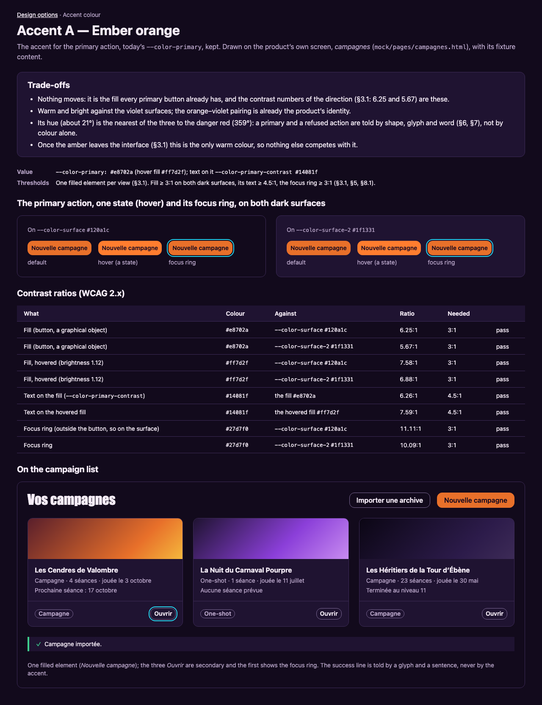
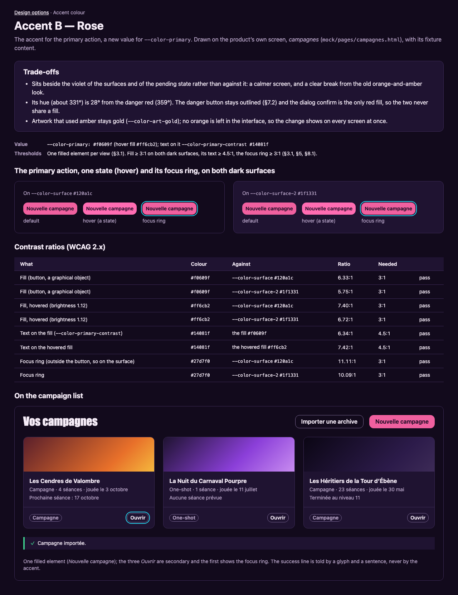
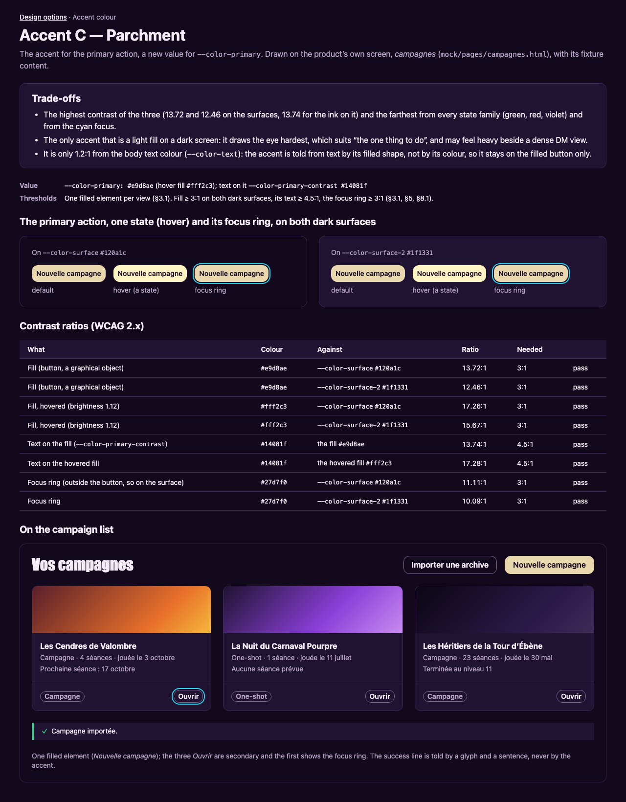
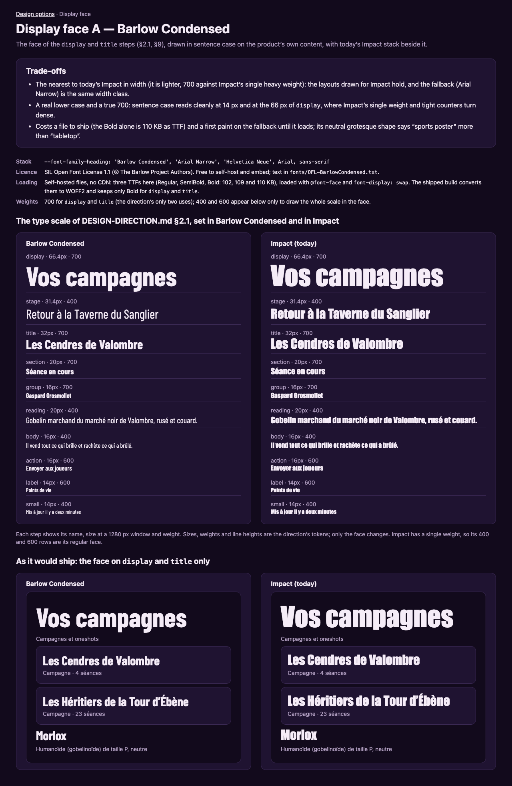
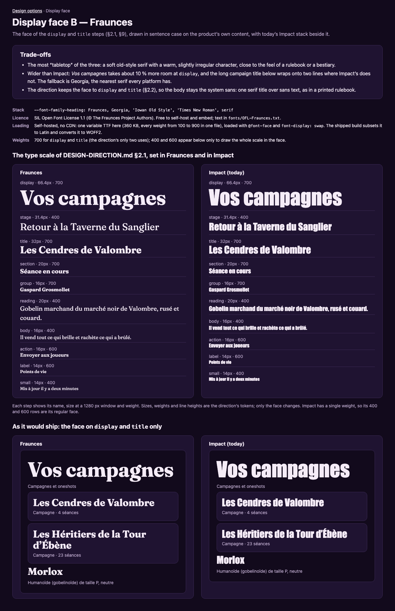
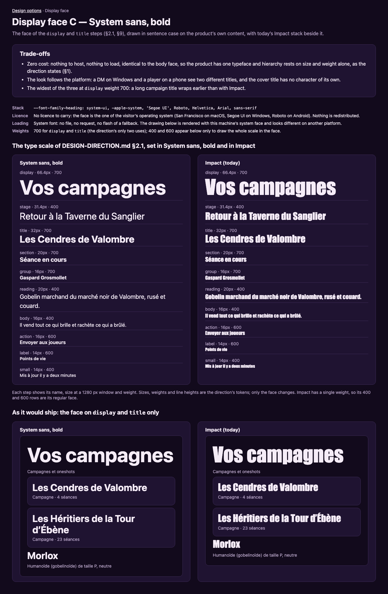
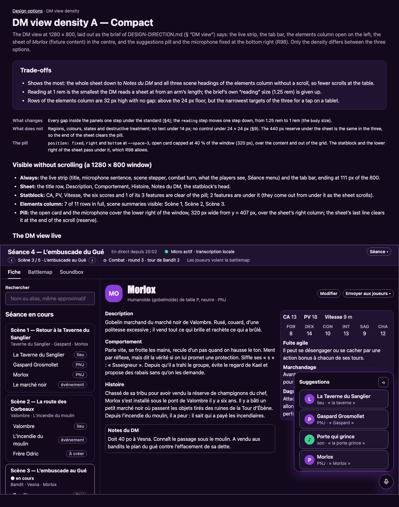
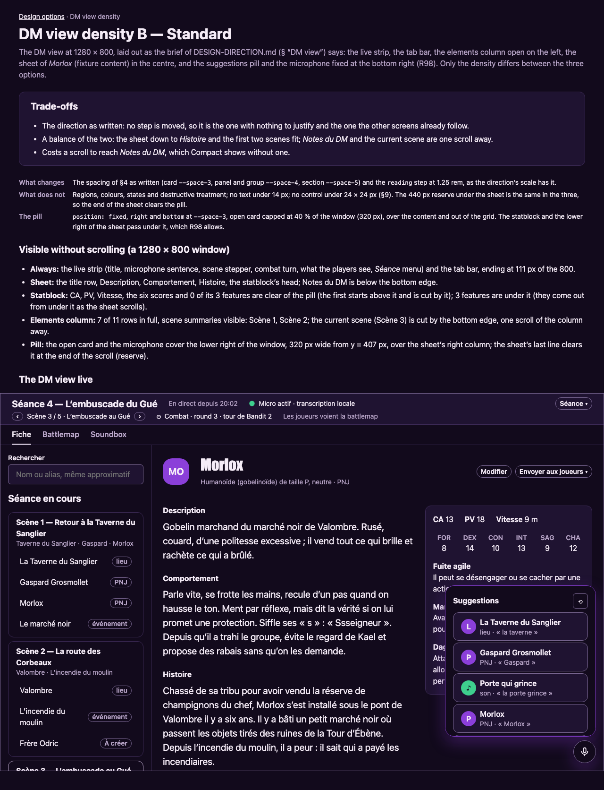
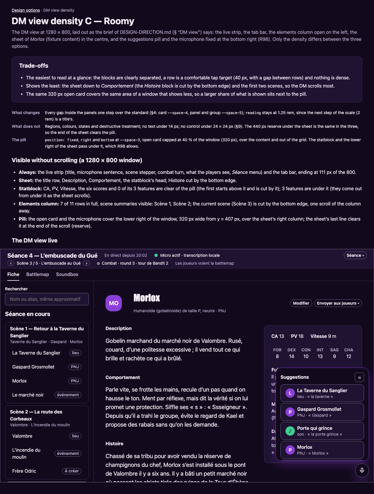

Design options for the owner
Three choices in DESIGN-DIRECTION.md §9 are the owner’s taste. Each is drawn below as options A, B and C on the product’s own content, with its trade-offs written beside it. Every option already meets the direction’s contrast and hierarchy rules, so whichever is picked can be built as it is. Nothing here is chosen. Click a picture to open the option; the PNG beside each page is the same drawing rendered at 1280 px.
1. The accent colour
The fill of the one primary action of a view (§3). Drawn on the campaign list.

A — Ember orange#e8702a. today’s --color-primary, kept.
B — Rose#f0609f. a new value for --color-primary.
C — Parchment#e9d8ae. a new value for --color-primary.
2. The display face
The face of the display and title steps (§2). Drawn as the type scale, beside today’s Impact.

A — Barlow CondensedOFL 1.1, self-hosted file, no CDN.
B — FrauncesOFL 1.1, self-hosted file, no CDN.
C — System sans, boldSystem font, no file, no licence to carry.
3. The DM view’s density
The spacing inside the DM view’s panels and the size of the sheet’s reading step (§9). Drawn live at 1280 × 800 with the pill.

A — CompactEvery gap inside the panels one step under the standard (§4); the reading step moves one step down, from 1.25 rem to 1 rem (the body size).
B — StandardThe spacing of §4 as written (card --space-3, panel and group --space-4, section --space-5) and the reading step at 1.25 rem, as the direction’s scale has it.
C — RoomyEvery gap inside the panels one step over the standard (§4: card --space-4, panel and group --space-5); reading stays at 1.25 rem, since the next step of the scale (2 rem) is a title’s.
How to read these files
- Each page is self-contained: its CSS is inline and copies the values of
mock/design/tokens.cssand the direction’s proposed tokens (§10); it imports no stylesheet and makes no network request. The two OFL fonts load fromfonts/, which carries their licences. - The PNGs are rendered with headless Chromium at a 1280 px window.
- The interface is French, as in the product; this page and the notes are in English, as the direction is.